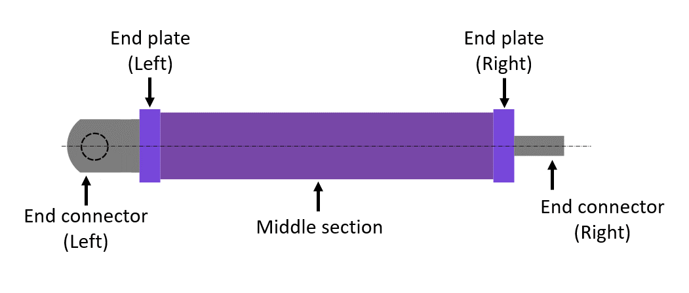
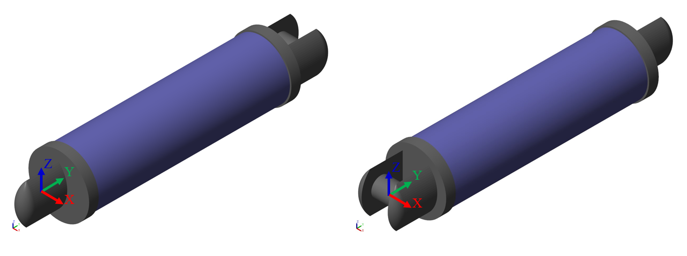
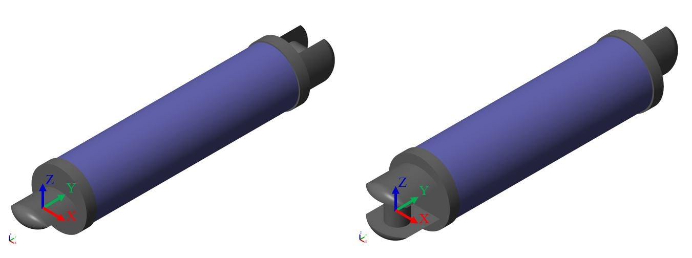
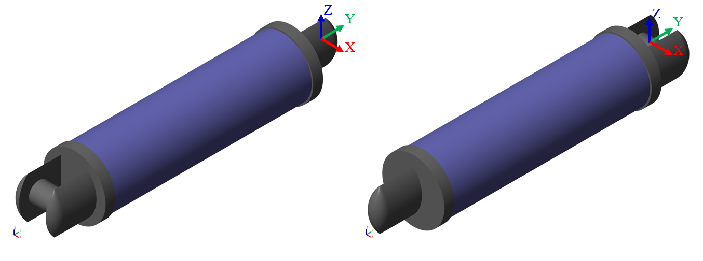
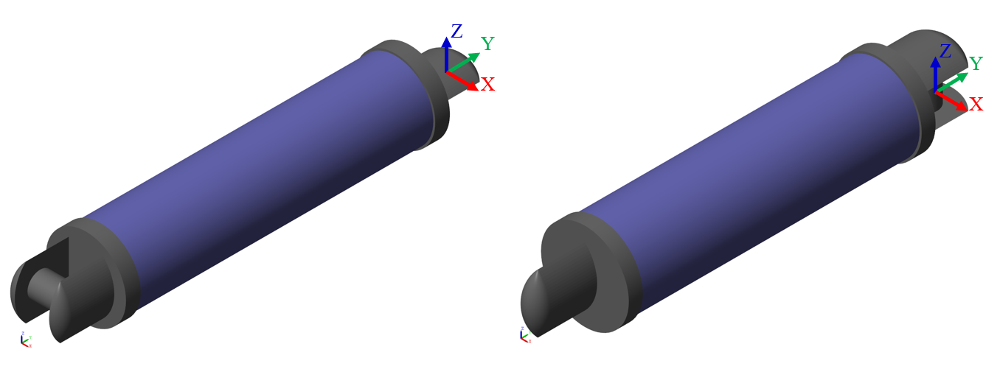
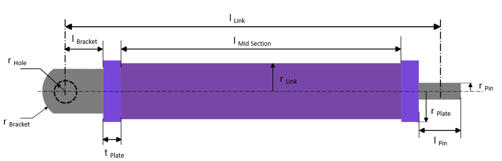
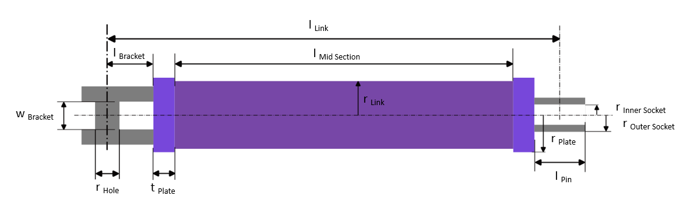

Robot Arm Link
Robot arm link or
simply, the Link block models the links of a manipulator robot. The
link is a rigid body that consists of a middle section, two end plates
(left plate and right plate) and two end connectors (left connector
and right connector). You can use the link to connect joints.

Ports
L - Left Frame
Body frame located at the centroid of the left-end connector. Use this frame to connect other components, such as joints.
R - Right Frame
Body frame located at the centroid of the right-end connector. Use this frame to connect other components, such as joints.
Parameters
Connector configuration
Left connector configuration
The configuration of the left connector, specified as Single bracket, Double bracket with pin, Rotating pin, Pin socket and No connector.
Connect the end connector of a link to the end connector
of another link using a Revolute Joint in between.
Left bracket orientation
To enable this parameter, specify
the Left connector configuration as Single bracket
or Double bracket with pin. You can select the
Left bracket orientation either to +X
or +Z. If you set Left bracket orientation to +X,
the axis of the bracket hole (for Single bracket) or bracket pin
(for Double bracket with pin) is oriented in the X-axis direction
of the World Frame.

Similarly, if you set the Left bracket orientation to +Z,
the axis of the bracket hole (for Single bracket) or bracket pin
(for Double bracket with pin) is oriented in the Z-axis
direction of the World Frame.

Right connector configuration
The configuration of the right connector, specified as Single bracket, Double bracket with pin, Rotating pin, Pin socket and No connector.
Connect the end connector of a link to the end connector
of another link using a Revolute Joint in between.
Right bracket orientation
To enable this parameter, specify
the Right connector configuration as Single bracket
or Double bracket with pin. You can select the
Right bracket orientation either to +X
or +Z. If you set Right bracket orientation to +X,
the axis of the bracket hole (for Single bracket) or bracket pin
(for Double bracket with pin) is oriented in the X-axis direction
of the World Frame.

Similarly, if you set the Right bracket orientation to +Z,
the axis of the bracket hole (for Single bracket) or bracket pin
(for Double bracket with pin) is oriented in the Z-axis
direction of the World Frame.

Geometry
Link radius
Radius of the cylinder that constitutes the middle section of the link.
Some internal parameters of the link depend on the Link radius.
If you set connector configuration to Single bracket and Double bracket with pin, the parameters are calculated as following:
l Bracket = (r Link/2)*1.5
w Bracket = 0.9*r Link
r Hole = r Link/3
r Bracket = r Link
If you set connector configuration to Rotating pin, the parameter is calculated as following:
r Pin = r Link/3
l Pin = r Link/2
If you set connector configuration to Pin socket, the parameters are calculated as following:
r Outer Socket = 1.5*(r Link/3)
r Inner Socket = r Link/3
For left plate and right plate, the parameter is formulated as following:
r Plate = 1.05*r Link
where,
l Bracket is the distance of the center of hole (for Single bracket) or center of pin (for Double bracket with pin) from the base of the bracket.
w Bracket is the distance between two single brackets of a Double bracket with pin. It is also the pin length of a Double bracket with pin.
r Hole is the radius of the hole (for Single bracket) or of the pin (for Double bracket with pin).
r Bracket is the radius of the leftmost curvature of the left bracket or of the rightmost curvature of the right bracket.
r Plate is the radius of the cylindrical end plates.
r Pin is the radius of the cylindrical rotating pin
r Outer Socket is the outer radius of the holow cylindrical pin socket
r Inner Socket is the inner radius of the holow cylindrical pin socket
Link length
Distance between the center of left connector and the center of right connector of the link.
The middle section of the link and some internal parameters of the link depend on the Link length.
The parameter, l Mid Section is calculated as following:
l Mid Section = (l Link - n Bracket*l Bracket - n Pin*0.5*l Pin)/(1 + 2*0.05)
where, l Mid Section is the length of the cylinder that constitutes the middle section of the link.
l Link is the distance between the center of left connector and the center of right connector of the link.
n Bracket is the number of bracketed joints for the link.
n Pin is the number of pinned joints for the link.
l Bracket is the distance of the center of hole (for Single bracket) or center of pin (for Double bracket with pin) from the base of the bracket.
l Pin is the length of the cylindrical pin or of the hollow cylindrical pin socket.
For left plate and right plate, the plate thickness is calculated as following:
t Plate = 0.05*l Mid Section
where, t Plate is the length of the cylindrical end plates.
Below is the schematic of a link with Single bracket as left connector and Rotating pin as right connector.

Below is the schematic of a link with Double bracket with pin as left connector and Pin socket as right connector.

Inertia
Inertia type
Inertia type, specified as Custom or Calculate from Geometry. Select Custom to model a distributed mass with the specified moments and products of inertia. Select Calculate from Geometry to enable the block to automatically calculate the rotational inertia properties from the solid geometry and specified mass density of the link.
Link density
Material density of the link, specified as a positive scalar. The unit is kg/m^3.
Mass
Total mass of the link, specified as a positive scalar. The unit is kg. Mass is distributed to the cylindrical Middle section only and the mass of end connectors and end plates is assumed to be zero.
Center of mass
[x y z] coordinates of the center of mass of the link relative to the body frame located at the centroid of the left surface of the Middle section.
Moments of inertia
Three-element vector with the [Ixx Iyy Izz]
moments of inertia specified relative to a frame with origin at the
center of mass and axes parallel to the body frame
located at the centroid of the left surface of the Middle section.
The moments of inertia are the diagonal elements of the inertia tensor
where:
Ixx = ∫m (y2 + z2)dm
Iyy = ∫m (x2 + z2)dm
Izz = ∫m (x2 + y2)dm
Products of inertia
Three-element vector with the [Iyz Izx Ixy]
products of inertia specified relative to a frame with origin at the
center of mass and axes parallel to the body frame
located at the centroid of the left surface of the Middle section.
The products of inertia are the off-diagonal elements of the inertia tensor
where:
Iyz = - ∫m yz dm
Izx = - ∫m zx dm
Ixy = - ∫m xy dm
Graphic
Link color
Color of the Middle section graphic under direct white light, specified as an [R G B] or [R G B A] vector on a 0–1 scale. An optional fourth element (A) specifies the color opacity on a scale of 0–1. Omitting the opacity element is equivalent to specifying a value of 1.
Copyright 2023 - 2024 The MathWorks, Inc.